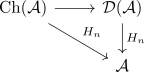

some thoughts: derived functors
list
- erstmal:
- lokalisierung von kategorien
- universelle eigenschaft: funktoren die $W$ zu isos abbilden können eindeutig fortgesetzt werden
- auf freie art: mache morphismen zu isos
- relevant:
- lokalisierungen existieren; aber i.A. schwer ausrechenbar
- cooler fakt:
- anima lokalisierung $\mathrm{Top}[w.equiv]$
- aber auch: $\mathrm{Ab}$$\mathrm{Shv}(\mathcal{C})$ ist eine Lokalisierung von $\mathrm{Grp}$$\mathrm{PSh}(\mathcal{C})$
- (adjunktion: ein adjungierter volltreu ~> gibt lokalisierung entlang unit/counit morphisms)
- nicht nur hinzufügen von neuen isomorphismen / neuen units
- sondern auch: objekte können isomorph werden
- z.B. $\mathrm{Grp} \xrightarrow{(-)^{\mathrm{ab}}} \mathrm{Grp}[(G \rightarrow G^{\mathrm{ab}})^{-1}] \simeq \mathrm{Ab}$ # lokalisierung: nicht in der derivierten ! - z.b. limits / colimits non exakt sequence: z.B. x -> 0 colimit # i.A. nicht so einfach: anima & derivierte keine adjunktion :
- introduce: $\mathrm{Ch_*}(\mathcal{A})$, quasi-isomorphismus
- derivierte kategorie: lokalisierung entlang quasi-isomorphismen $\mathrm{Ch_*}(\mathcal{A}) \rightarrow \mathcal{D}(\mathcal{A})$
- in der derivierten kategorie: wohldefinierter homologie funktor

- $\mathcal{A}, \mathcal{B}$ abelian categories (angenommen: $\mathrm{RMod}, \mathrm{SMod}$)
- $\mathcal{F}: \mathcal{A} \rightarrow \mathcal{B}$ an additive functor
- Problem: in general not left/right exact.
- möglich:
- a) "so etwas wie exakt machen" (genauer: exakter Funktor zwischen Derivierten kategorien)~> ggbf. tools aus homologischer algebra verwenden
- b) möglichkeit: "zusätzliche Information" (z.B. Ext hat dank Yoneda eine zusätzliche interpretation)
- "Solution":
- $\mathcal{A} \hookrightarrow \mathrm{Ch}(\mathcal{A}) \xrightarrow{\mathcal{F}(-)} \mathrm{Ch}(\mathcal{B})$ additiver funktor induziert einen funktor
- der induzierte funktor $\mathrm{Ch}(\mathcal{F}(-))$ erhält chain homotopies ("ungefähr lösung zu einer lineare gleichungen")
- quasi-isomorphismen werden nicht erhalten! (nur wenn exakt) (naiv: induced functor on chain complexes of additive functor in general does not preserve quasi-isomorphisms)
- erhalten nicht direkt einen funktor $\mathcal{D}(\mathcal{F})$
- besonderheit: quasi-isomorphismen zwischen chain complexes consisting of projectives sind automatisch chain homotopy equivalences
- guter/richtiger kandidat: wenn wir einen kettenkomplex von projektiven haben: dann $\mathcal{D}(\mathcal{F})(P_*) \coloneqq \mathcal{D}(\mathcal{F}(P_*))$
- projektive resolution von $A$:
- ist genau ein quasi-isomorphismus $P_* -> A$
- in der derivierten kategories $P_* \simeq A$
-
- ext hat eine schöne interpretation: